عمومی یا شخصی؟
پس از صفحات آشناسازی و مجوزها، برنامه صفحه اصلی خود را نمایش میدهد. به محض ظاهر شدن این صفحه، دو دکمه شاخص با عنوانهای «عمومی» و «شخصی» را خواهید دید. این دکمهها به شما امکان میدهند که بین حالت مرور عمومی و حالت مرور شخصی انتخاب کنید.
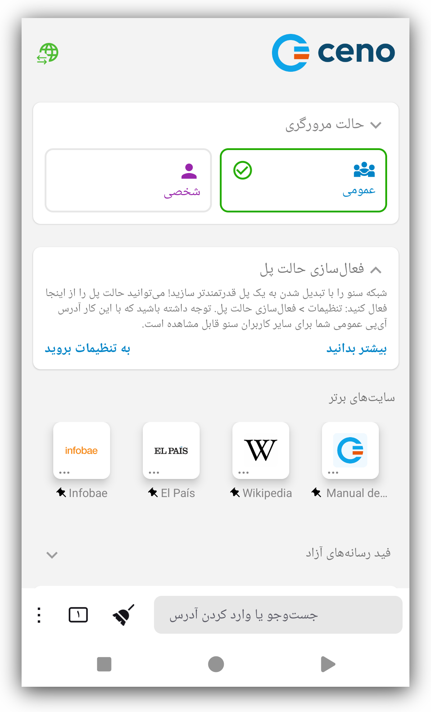مرورگری عمومی
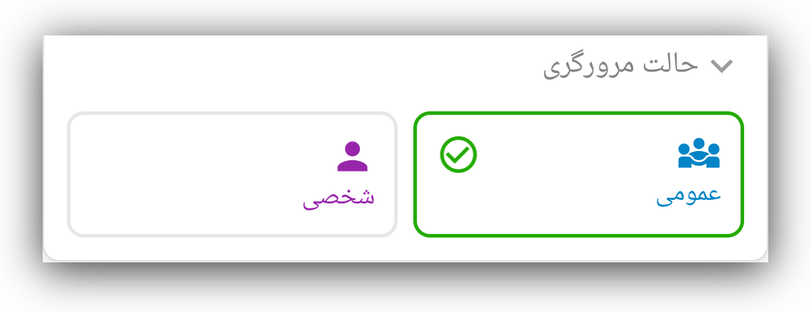تصویر زیر نحوه بازیابی محتوای وبسایت در حالت مرور عمومی سنو را نشان میدهد.

خطوط نقطهچین در این تصویر نشاندهنده درخواستها و پاسخهای محتوای وبسایت هستند و علامتهای ستاره محتوای رمزگذاریشده را نشان میدهند.
در حالت مرور عمومی، درخواستهای کاربران توسط شبکه عمومی سنو پردازش
میشوند. در این حالت، کاربران محتوای یک وبسایت را همان طور درخواست میکنند که
هنگام استفاده از هر مرورگر دیگری انجام میدهند. اگر سنو بتواند مستقیما به
وبسایت مبدا دسترسی پیدا کند، محتوای آن را بازیابی میکند و به کاربر ارائه
میدهد – درست مانند اغلب مرورگرهای دیگر.
اما اگر سنو نتواند به وبسایت مورد نظر دسترسی پیدا کند، تلاش خواهد کرد از طریق
تزریقکنندهها (injectors) به آن دست یابد.
تزریقکنندهها
تزریقکنندهها یا injectors سرورهای امنی هستند که مسئولیت تزریق محتوای پرکاربرد به شبکه سنو و همچنین تایید اصالت و امضای آن را بر عهده دارند. تزریقکنندهها در مکانهای راهبردی قرار داده شدهاند تا هم برای کاربران در مناطق محدودشده قابل دسترس باشند و هم بتوانند به وبسایتهای مبدا دسترسی پیدا کنند. به کمک آنها محتوای مورد نظر یا از وبسایت مبدا یا از شبکه سنو بازیابی شده و به کاربری که آن را درخواست کرده تحویل داده میشود. این سرورها توسط eQualitie اداره میشوند.
بهعنوان کاربر، لازم نیست برای اتصال به یک تزریقکننده کاری انجام دهید – وقتی وبسایتی را درخواست کنید که دسترسی مستقیم به آن وجود ندارد، برنامه بهطور خودکار این کار را انجام میدهد.
پلها
پلها دستگاههایی هستند که به کاربران سنو تعلق دارند و در مکانهایی قرار گرفتهاند که از اتصال و دسترسی اینترنت نسبتا بدون محدودیت برخوردارند. این دستگاهها برای آن دسته از کاربران سنو که نمیتوانند مستقیما به وبسایتها دسترسی پیدا کنند قابل دسترساند. وظیفه آنها ارسال درخواستهای رمزگذاریشده کاربران به تزریقکنندهها و بازگرداندن پاسخهای رمزگذاریشده به کاربران است.
پلها نمیتوانند درخواستها و پاسخهایی را که منتقل میکنند بخوانند.
هر کاربر سنو میتواند دستگاه خود را طوری پیکربندی کند که به یک پل تبدیل شود.
کلید تغییر وضعیت فعالسازی حالت پل را میتوان هم از طریق پیوند موجود در صفحه اصلی و هم از منوی سهنقطهای عمودی در سمت راست نوار آدرس پیدا کرد.
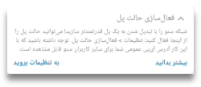در صفحه تنظیمات، تغییر کلید فعالسازی حالت پل به وضعیت روشن
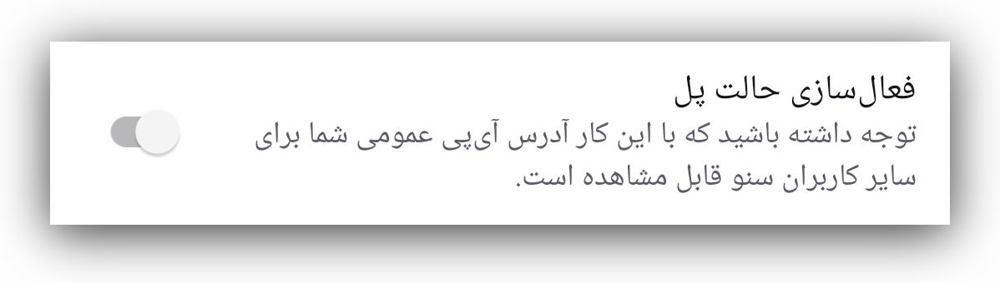
دستگاه شما را به پلی برای سایر کاربران سنو که دسترسی محدودتری به اینترنت دارند تبدیل میکند. این کار نیازمند راهاندازی مجدد سرویسهای سنو است
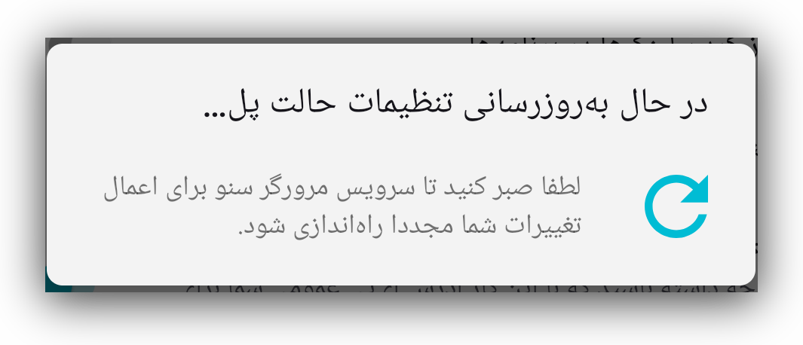پس از آن که حالت پل با موفقیت برقرار شد، یک پیام تایید دریافت خواهید کرد.
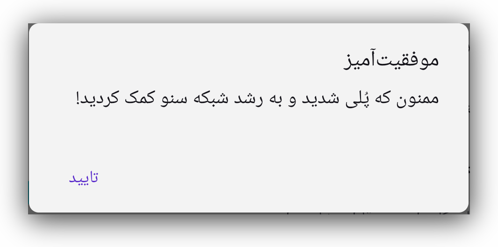از این نقطه به بعد، برنامه سنو میتواند روی دستگاه شما بهعنوان یک پل عمل کند تا به کاربران سنو در مناطق محدودشده کمک کند به محتوای مورد نظر دسترسی پیدا کنند.
با این حال، پل شدن همچنین نیازمند تنظیمات مشخصی در روتر یا شبکه شماست که در بخش پیکربندی پل توضیح داده شده.
کَش سنو
و در نهایت، حافظه پنهان (کَش) سنو. همه کاربران سنو عضو این شبکه همتابههمتا هستند و محتوای وبسایتی را که از طریق شبکه عمومی سنو بازیابی شده ذخیره میکنند و با یکدیگر به اشتراک میگذارند.
در حالت مرور عمومی، سنو محتوای درخواستشده را از طریق هر یک از این کانالهای ارتباطی بازیابی میکند. این برنامه همه دادههای خصوصی (مانند گذرواژهها و کوکیها) را از ترافیک وب حذف میکند تا مطمئن شود هیچ یک از آنها به سایر کاربران درز پیدا نمیکند.
مرور عمومی – چه زمانی از آن استفاده کنیم
این گزینه برای شما یعنی کاربر در نظر گرفته شده تا به بیشتر چیزهایی که نیاز به لاگین کردن یا وارد کردن داده شخصی ندارند دسترسی داشته باشید. میتوانید از این حالت برای مرور وب، گوش دادن به پادکست، دیدن اخبار، خواندن وبلاگها یا مقالهها، دنبال کردن ورزش، علم، موسیقی، رویدادها یا سایر محتواها استفاده کنید. در حالت مرور عمومی، سنو ممکن است تلاش کند محتوای درخواستی را مستقیما از وبسایتها، از شبکه عمومی سنو (تزریقکنندهها و پلها) یا از سایر کاربران سنو (حافظه پنهان توزیعشده) بازیابی کند.
لطفا توجه داشته باشید که برخی محتواها که برای اشتراکگذاری ایمن محسوب نمیشوند هرگز تزریق نخواهند شد، فرقی نمیکند چند نفر آنها را با استفاده از مرور عمومی بازیابی کنند. این موارد شامل محتوایی است که توسط سرور مبدا، بهعنوان خصوصی علامتگذاری شده، محتوایی که نیاز به احراز هویت دارد، و بخشی از ترافیکی که توسط برخی برنامههای وب پویا مبادله میشود.
منابع وبسایت در حالت عمومی
وقتی میخواهید با استفاده از حالت عمومی سنو به یک وبسایت دسترسی پیدا کنید، اپلیکیشن ممکن است محتوا را مستقیما از خود وبسایت یا از طریق شبکه عمومی سنو بازیابی کند. در فصل بعدی این فرایند را با جزئیات بیشتر توضیح میدهیم.
محتوا مستقیما از وبسایت بازیابی شده است
سنو زمانی که سرور مبدا در دسترس باشد، محتوای مورد نظر را مستقیما از آن بازیابی میکند. این همان روشی است که در بیشتر مرورگرهای رایج برای دسترسی به وبسایتها استفاده میکنید.

وقتی به این شکل به وبسایتها دسترسی پیدا میکنید، آنها در حافظه کش شما ذخیره نمیشوند و نمیتوانید آنها را با دیگر اعضای شبکه سنو به اشتراک بگذارید. هنگامی که سنو محتوا را از سرور مبدا بازیابی میکند، دکمه کوچک سنو در نوار آدرس یک نقطه سبز خواهد داشت.
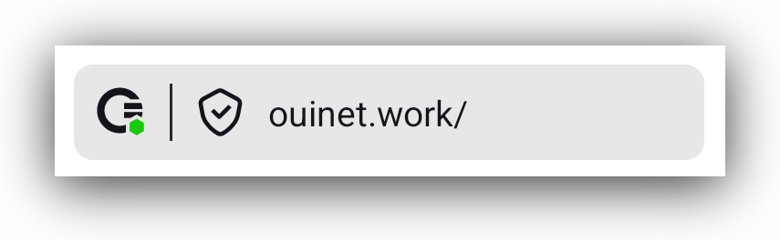اگر روی آن دکمه بزنید، خواهید دید چه تعداد از اجزای وبسایت درخواستی از خود وبسایت، از شبکه سنو یا از کش سنو بازیابی شدهاند.
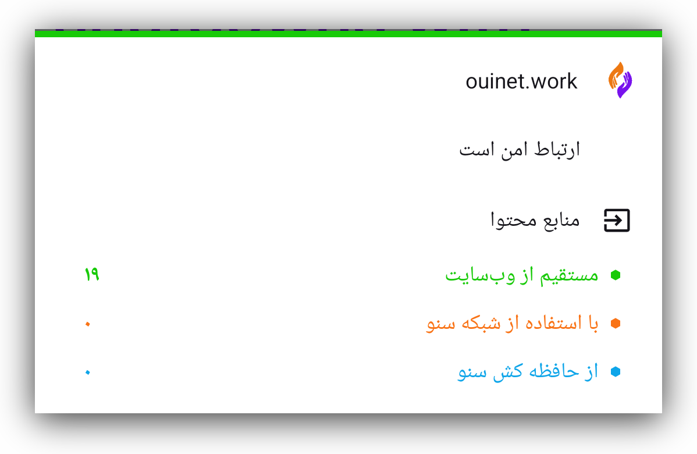اگر به مسیر تنظیمات > دادهها بروید، میتوانید تایید کنید که پس از دسترسی مستقیم به یک وبسایت از سرور خودش، هیچ دادهای در کش شما ذخیره نشده است.

در این حالت، خطراتی که شما بهعنوان کاربر با آن روبهرو هستید مشابه خطرات استفاده از هر مرورگر دیگری است. بیشتر بدانید.
محتوا از طریق شبکه عمومی سنو بازیابی شده است
وقتی سنو نتواند به سرور مبدا دسترسی پیدا کند، تلاش میکند از طریق شبکه عمومی سنو به آن دسترسی یابد.

این شبکه شامل سرورهای امنی به نام تزریقکنندهها (injectors) است که دسترسی مستقیم به وبسایتهای مبدا (اصلی) دارند و محتوای آن وبسایتها را به شبکه سنو وارد میکنند. هنگامی که محتوای وبسایتی از طریق شبکه عمومی سنو بازیابی شود، این موضوع با یک نقطه نارنجی روی دکمه کوچک سنو در نوار آدرس مشخص میشود.
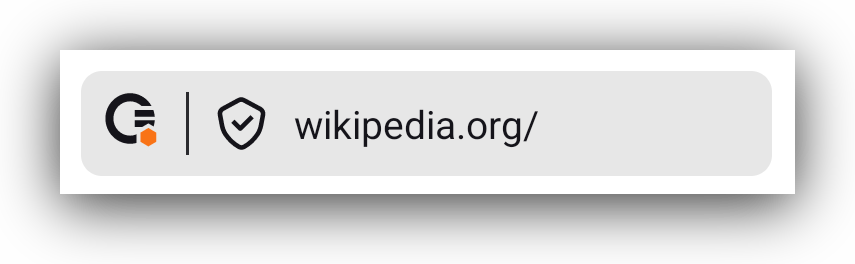زدن این دکمه یک پنجره کوچک باز میکند که به شما اطلاع میدهد چه تعداد از اجزای وبسایت از شبکه عمومی سنو بازیابی شدهاند.
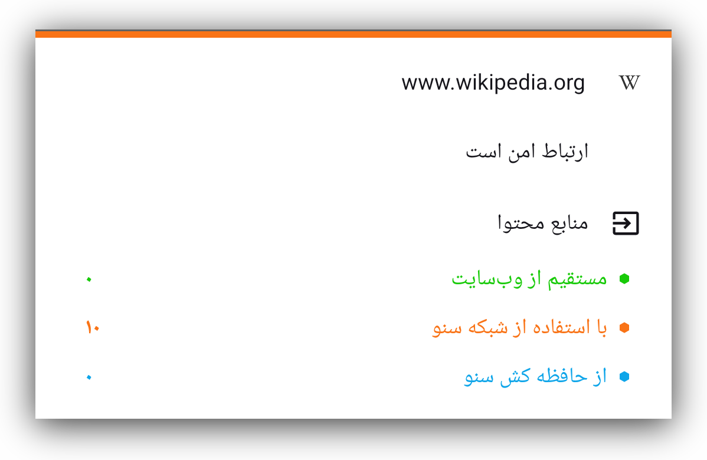هر وبسایتی که به این روش به آن دسترسی پیدا کنید، در کش محلی مرورگر سنو شما ذخیره خواهد شد و در دسترس دیگر اعضای شبکه سنو قرار میگیرد.
میتوانید با رفتن به مسیر تنظیمات > دادهها ببینید کدام وبسایتها در کش شما ذخیره شدهاند.
در آن بخش سه گزینه وجود دارد: حافظه کش محلی، محتوای بهاشتراکگذاشتهشده
توسط شما و پاک کردن محتوای حافظه کش.
بخش حافظه کش محلی به شما نشان میدهد چه مقدار داده در کش سنو روی دستگاه شما
ذخیره شده است.
اگر روی محتوای بهاشتراکگذاشتهشده توسط شما بزنید، میتوانید وبسایتهایی را ببینید که دستگاه شما میتواند در شبکه سنو در دسترس قرار دهد.

زدن گزینه پاک کردن محتوای کش به شما امکان میدهد همه دادههای کششده را حذف کنید.
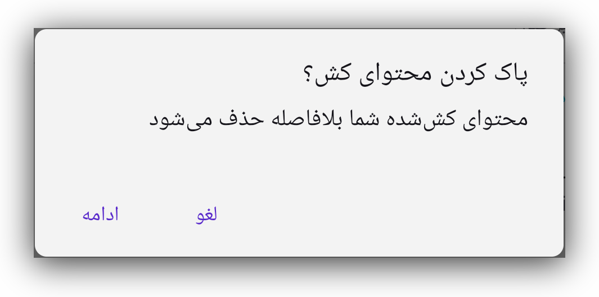محتوای کششده
این روش دسترسی به وبسایتها زمانی مفید است که سایر اجزای شبکه عمومی سنو در
دسترس نباشند، یا هنگامی که شما به هر دلیل تصمیم بگیرید از دستگاه همتایان خود به
یک وبسایت دسترسی پیدا کنید.
تصویر زیر درخواستها و پاسخهایی را نشان میدهد که میان اعضای شبکه سنو، که
پیشتر به وبسایتهای موردنظر دسترسی داشته و آنها را کش کردهاند، رد و بدل
میشود.

اگر محتوای یک وبسایت از طریق حافظه کش سنو بازیابی شود، دکمه سنو یک نقطه آبی کوچک خواهد داشت که این موضوع را نشان میدهد.
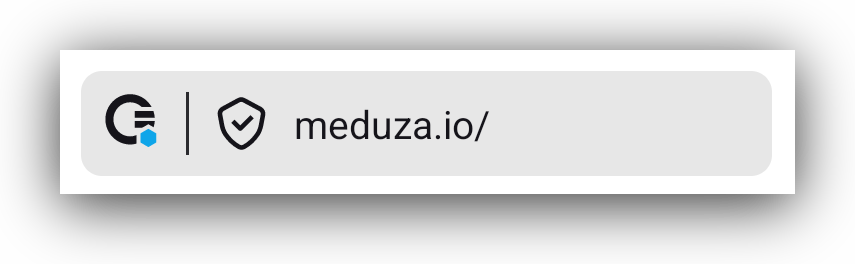کلیک روی دکمه سنو صفحه اطلاعاتی را باز میکند که همین موضوع را نشان میدهد.
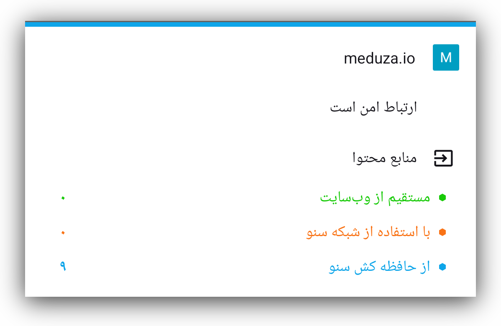در این حالت، محتوای وبسایت روی دستگاه شما کش میشود و هنگام درخواست، با دیگر کاربران سنو به اشتراک گذاشته خواهد شد. میتوانید این موضوع را با رفتن به مسیر تنظیمات > دادهها > محتوای بهاشتراکگذاشتهشده توسط شما تایید کنید.
همچنین ممکن است مرورگر سنو وبسایتی را باز کند که پیشتر هنگام دسترسی شما در کش دستگاهتان ذخیره شده است. در این حالت، سنو با نمایش منابع وبسایت به رنگ خاکستری شما را آگاه میسازد.

در تنظیمات سنو > ابزارهای توسعهدهنده > منابع وبسایت میتوانید این چهار گزینه را علامت بزنید یا از حالت انتخاب خارج کنید.
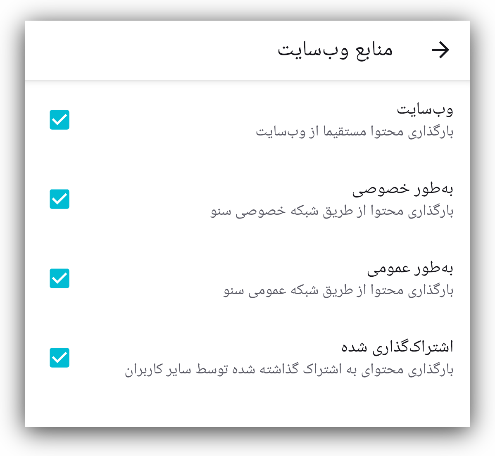اگر همه آنها علامت خورده باشند، سنو بسته به حالت مرور، تلاش میکند وبسایت را همزمان از طریق همه سازوکارهای ممکن دریافت کند. ما این را «بازیابی ترکیبی» مینامیم. هر سازوکاری که زودتر پاسخ دهد، استفاده خواهد شد و بقیه درخواستها لغو میشوند.
برای بهترین نتیجه، توصیه میکنیم که هر چهار گزینه همیشه فعال باقی بمانند.
مرور شخصی – چه زمانی از آن استفاده کنیم
میتوانید با زدن دکمه «شخصی» در صفحه اصلی، مرور شخصی را انتخاب کنید.
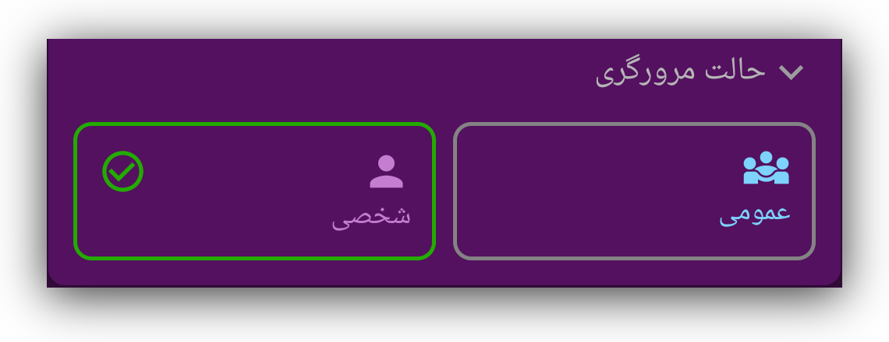وقتی این گزینه را انتخاب کنید، حتی اگر هر چهار تنظیم منابع وبسایت فعال باشند، اپلیکیشن سنو تنها تلاش خواهد کرد به وبسایتهای موردنظر مستقیما یا از طریق شبکه شخصی سنو دسترسی پیدا کند.
از این حالت مرور میتوان برای وبسایتهایی استفاده کرد که نیاز دارید در آنها وارد حساب کاربری شوید و دادههای شخصی وارد کنید. نمونهها شامل: وبسایتهای خرید، ایمیل، شبکههای اجتماعی یا هر وبسایت دیگری است که نمیخواهید با بقیه شبکه سنو به اشتراک گذاشته شود.
دسترسی به وبسایتها از طریق شبکه شخصی سنو
تصویر زیر جریان درخواستها و پاسخهای وبسایت میان اجزای شبکه شخصی سنو را نشان میدهد.
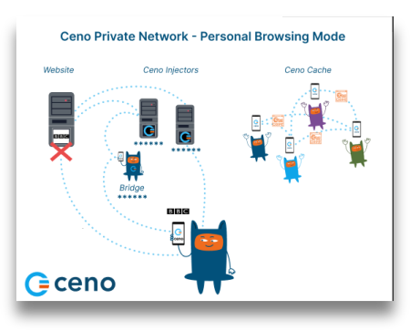در حالت مرور شخصی، وقتی وبسایتی درخواست میشود، سنو آن را یا مستقیما از سرورهای مبدا، یا از طریق تزریقکنندههای سنو (injectors) بازیابی میکند. با این حال در حالت شخصی، تزریقکنندهها مانند حالت مرور عمومی محتوا را کش نمیکنند. آنها تنها درخواست را به سرور مبدا منتقل کرده و پاسخ را به کاربر بازمیگردانند، اما نمیتوانند محتوای رمزگذاریشده را ببینند. درباره حالت مرور شخصی بیشتر بدانید.
اگر وبسایتی در حالت مرور عمومی در دسترس نباشد، به دلیل تفاوت در نحوه کار این دو حالت، توصیه میکنیم تلاش کنید از طریق حالت مرور شخصی به آن دسترسی پیدا کنید.
برای کارکرد درست این سازوکار، لازم است گزینههای خصوصی و وبسایت در بخش منابع وبسایت علامتخورده باقی بمانند.